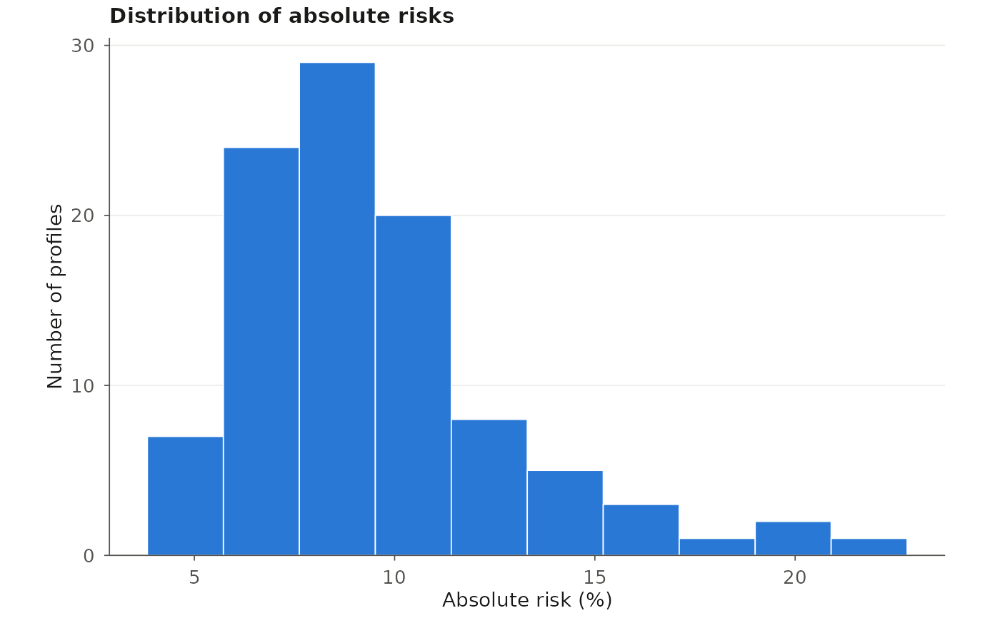

Methods for the results of computeAbsoluteRisk() (class "icare") and
computeAbsoluteRiskSplitInterval() (class "icareSplit"). print()
shows the risk interval and the risk of the first profiles, summary()
summarizes the risks, and plot() draws their distribution.
Usage
# S3 method for class 'icare'
print(x, n = 10, ...)
# S3 method for class 'icareSplit'
print(x, n = 10, ...)
# S3 method for class 'icare'
summary(object, ...)
# S3 method for class 'icareSplit'
summary(object, ...)
# S3 method for class 'icare'
plot(x, base.size = 11, ...)
# S3 method for class 'icareSplit'
plot(x, base.size = 11, ...)Arguments
- x, object
Result of
computeAbsoluteRisk()orcomputeAbsoluteRiskSplitInterval().- n
Number of profiles to print.
- ...
- base.size
Base font size of the plot, in points.
Value
print() returns x invisibly; summary() a summary table of
the risks; plot() a ggplot object, invisibly, after drawing it.
Examples
data(bc_data, package = "iCARE")
results <- computeAbsoluteRisk(
model.formula = bc_model_formula,
model.cov.info = bc_model_cov_info,
model.log.RR = bc_model_log_or,
model.ref.dataset = ref_cov_dat,
model.disease.incidence.rates = bc_inc,
model.competing.incidence.rates = mort_inc,
apply.age.start = 50,
apply.age.interval.length = 30,
apply.cov.profile = ref_cov_dat[1:100, ]
)
results
#> Absolute risks of 100 profiles
#>
#> Int_Start Int_End Risk_Estimate
#> 1 50 80 0.06268803
#> 2 50 80 0.06985653
#> 3 50 80 0.06420817
#> 4 50 80 0.06357596
#> 5 50 80 0.09035070
#> 6 50 80 0.07187811
#> 7 50 80 0.09116658
#> 8 50 80 0.08424347
#> 9 50 80 0.08432452
#> 10 50 80 0.06436779
#> ... 90 more profiles
#> Profiles and risks: `$details`; risks: `$risk`.
summary(results)
#> Risk_Estimate
#> Min. :0.04777
#> 1st Qu.:0.07137
#> Median :0.08772
#> Mean :0.09529
#> 3rd Qu.:0.11005
#> Max. :0.21848
plot(results)
